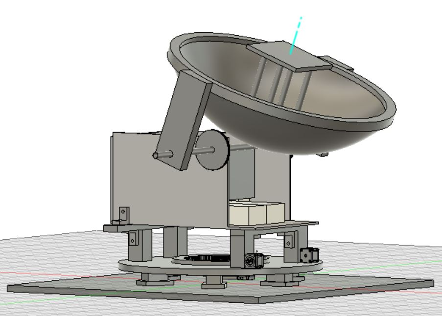

<topbar style="display:none;">
<item><a href="../index.html">Home</a></item>
<item><a href="../about.html">About</a></item>
<menu name="Updates">
<item><a href="../week-1/index.html">Week 1</a></item>
<item><a href="../week-2/index.html">Week 2</a></item>
<item><a href="../week-3/index.html">Week 3</a></item>
<item><a href="../week-4/index.html">Week 4</a></item>
<item><a href="../week-5/index.html">Week 5</a></item>
<item><a href="../week-6/index.html">Week 6</a></item>
<item><a href="../week-7/index.html">Week 7</a></item>
<item><a href="../week-8/index.html">Week 8</a></item>
<item><a href="../week-9/index.html">Week 9</a></item>
<item><a href="../week-10/index.html">Week 10</a></item>
<item><a href="../week-11/index.html">Week 11</a></item>
<!-- <item><a href="#">Final Project</a></item> -->
</menu>
</topbar>
<!-- This is a comment, it is ignored by the compiler/interpreter -->
## Week 11 - Further Modelling
</br>
<h4> Solar Collection and Transport</h4>
In week 11, we focused mainly on finishing the electrical components of the solar tracking system, and finishing the CAD
model of our design with the implementation of various components integrated into the updated CAD model. With the energy
storage team having completed fabricating the insulation for the solar battery, we were able to create an accurate CAD
model of what the solar battery looks like, and finalize the components of our design which rely on the dimensions of that
shielding.
We also decided to update the mounting system for the solar collector to be set in the insulation for the solar battery itself,
which simplifies our design but does introduce new challenges in rotating the collector.
<h5> Energy Storage CAD Updates</h5>
The energy storage team has completed their fabrication of the plywood and firebrick insulation, and as we now have the
actual dimensions of the insulation and it's exact design, we have been able to update our CAD model accordingly.
Due to the extra plywood surrounding the firebrick insulation, we have determined that we can mount the axel which the solar
collector will rotate on directly into the insulation, rather than having to build additional supports into the base.
Mounting the dish directly into the insulation significantly simplifies our design and eliminates the need for 80/20
aluminum extrusions.
<h5> Solar Collector Mount Update</h5>
By shifting the mounting point for the solar collector to be on the insulation for the battery, we then needed to redesign
the mechanism which we use to mount the solar collector to the axel. The simplest solution to this was to design two
long struts which attached from the axel passing through the insulation to the mounting point on the solar collector as
shown in the model below.
Another notable update which was made to the collector mounting system was the attachment point of the struts, as we determined
that the resin would be too shallow to mount the supports into. We instead have determined to mount the struts directly to
the supporting rim via 3D printed attachments. The attachment mechanism is shown below.
<h4> Gear Updates</h4>
The timing belt which we will be using to rotate the solar collector is a GT2 timing belt with 3 mm spacing, and as such
needs to intermesh with gears specifically designed to work with a GT2 timing belt of the proper size. I initially began
designing the gears of proper design and shape in a parametric gear maker in OpenSCAD, however, those models imported
into Fusion 360 with the units off by a factor of 10, and as I could not find a solution, I then designed new gears
in Fusion based off of the initial design, with design calculations for 2 mm and 3 mm gears of varying inner diameters
shown below.
<img src = "./Design%20Calc%201.jpg" alt = "design calculations pg. 1" width = "300"/>
<img src = "./Design%20Calc%202.jpg" alt = "design calculations pg. 2" width = "300"/>
These gears have now been incorporated into the CAD model as shown below, with the updates to the whole design also included,
to ensure compatibility with all other parts.

One issue which became somewhat apparent may present itself, once the gears were introduced into the model, was the moment
arm which the solar collector now possesses as it is offset from its point of rotation by about 11 inches. For a solar collector
weight of 5 pounds, this gives a moment arm of 0.6386 [kg*m]. This moment arm could be counteracted by a 10 lb counterweight
placed at around 5.5 inches from the axel, or another 5 lb weight placed at 11 inches from the axel. Adding a counterweight
would both help prevent back drive and ease strain on the motor as it turns the collector, though it would increase the
moment of inertia of the solar collector assembly and thereby could end up putting more torque on the motor.
---
Precedent websites:
* <a href="https://inhabitat.com/worlds-first-molten-salt-solar-plant-produces-power-at-night/">Molten Salt Power Plant</a>
* <a href="https://www.energy.gov/energysaver/solar-water-heaters">Solar Water Heater</a>
* <a href="https://www.energy.gov/eere/solar/photovoltaics">Photovoltaics</a>